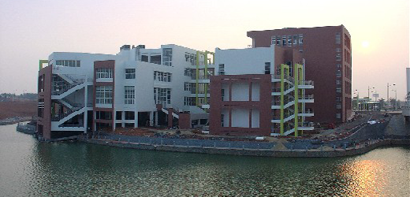

- 
南昌大学（英文名：Nanchang University）
是一所“文理工医渗透、产学研结合”涵盖理、工、医、文、经、管等众多学科的综合性大学，南昌大学的前身可追溯到1921年创办的江西公立医学专门学校和1940年创建的国立中正大学。 南昌大学是中国目前办学规模最大的大学，也是江西省唯一一所教育部和江西省人民政府共建的“211工程”和“小211工程”重点大学，是目前江西省综合实力最强的高等学府。 学校现正朝着“国内一流、世界知名的高水平研究型大学”的目标不断前进。
创办时间: 1921年
校训: 格物致新 厚德泽人
主要院系: 医学院、机电工程学院、信息工程学院等、生命科学与食品工程学院